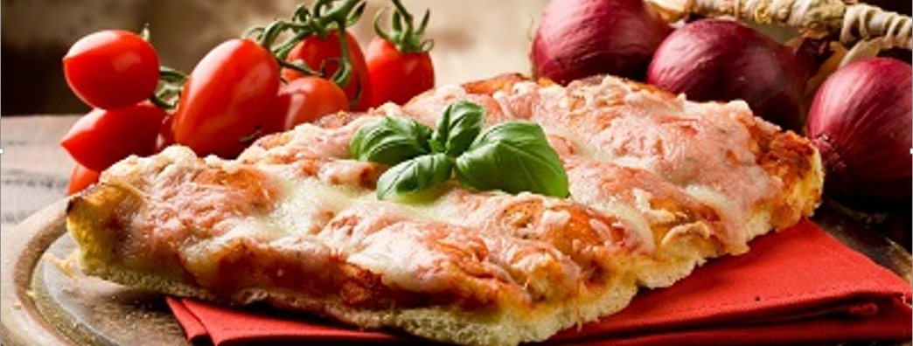

Ristorante Morganelli is a family owned and run Italian restaurant that caters to a wide range of allergies and tastes. While most of our items are (or can be made) allergy friendly, we promise you will not be able to tell. We work tirelessly to create recipes that stay true to the Italian classics while appealing to even the most sensitive of stomachs. We offer a small and intimate dining room that will make you feel like you are in the streets of Sicili. We pride ourselves in working around any and all allergies so do not be afraid to ask. Please stop by and try a gluten free pasta dish or a pizza made with lactose free cheese. Stay and indulge in our vegan and gluten free Tiramisu or dairy free sorbet.